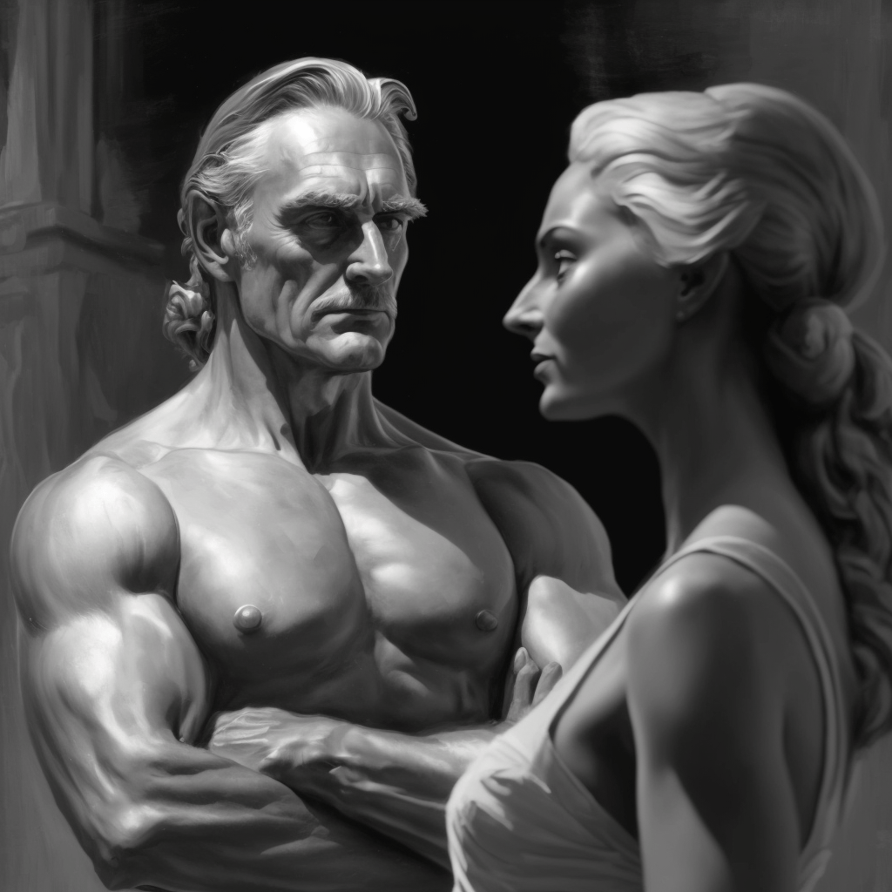
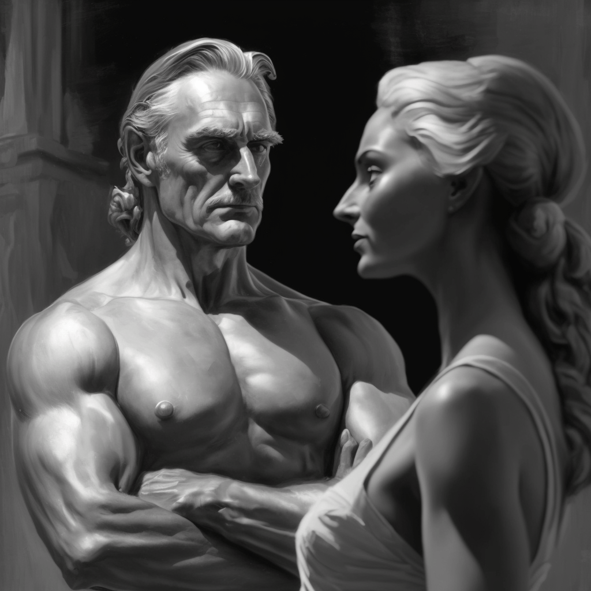

My fascination with psychology and belief in the fundamental role of archetypes in producing impactful designs motivated me to choose this research topic. Given the scope of the topic, I decided to focus on exploring the Lover archetype in-depth, which is a personal favorite that I recognized as relevant to my own work.
My thesis argues that although the representation of the Lover archetype in visual art has evolved away from conventional romanticized stereotypes, advertising has yet to catch up. As a result, one of the findings of this study is that designers must be cautious and thoughtful about the tools and information they employ in their work.
The study concludes that based on the research findings, the Lover archetype should be depicted in advertising in a more varied and contemporary style. Ultimately, the thesis emphasizes the importance of archetypes and recommends a more nuanced and critical approach to their use in practice.
The concept of archetypes
Jungian psychology is a theory of the human psyche developed by Carl Jung. It proposes that the human psyche is comprised of three parts: the conscious, the personal unconscious, and the collective unconscious. The collective unconscious, according to Jung, is a deep layer of the psyche that is shared by all humans and is made up of archetypes.
Archetypes are universal symbols or images that have a deep and profound meaning for humans. They are inherited from our ancestors and are part of our collective unconscious. Archetypes are patterns of behavior, thought, and emotion that are repeated throughout history and across cultures. They link the conscious mind with subconscious meanings, concepts, and desires, that Joseph Campbell says are “inherently expressive ... of common human needs, instincts, and potentials.” 1
Archetypes, symbols, myths
and dreams
Archetypes, symbols, myths and dreams are closely related concepts in Jungian psychology, as they are all ways of understanding and expressing the universal patterns and themes that exist in the human psyche. C. Jung wrote, "The archetype is an irrepresentable aspect of the psyche, or an aspect that can only be represented in a fragmented, distorted or symbolic form." 2
Joseph Campbell expanded on Jung's work by studying the myths and stories of cultures around the world. He believed that myths are the stories that we tell to make sense of the world and to find meaning in our lives.For Campbell, myths are like "public dreams," and the symbols in myths reflect the archetypal patterns of the human psyche.He wrote, "The symbols of mythology are not manufactured; they cannot be ordered, invented, or permanently suppressed. They are spontaneous productions of the psyche, and each bear within it, undamaged, the germ power of its source." 3
The connection between archetypes, symbols, and myths is essential to understand the human experience. Archetypes represent basic human experiences and patterns of behavior, which are expressed through symbols in myths,dreams, and art. Myths give shape and meaning to the world, and provide a framework for understanding the mysteries of the universe. Symbols in dreams and other forms of expression are the way that the unconscious communicates with the conscious mind, representing repressed desires and conflicts. 4
The Lover Archetype
in Art - From Romanticizing to Complete Truthfulness
In paintings from earlier times, the representation of the lover archetype was often idealized and romanticized, being full of passion, sensuality, and beauty. These paintings aimed to capture the essence of love and desire in a way that was both enchanting and uplifting, representing a form of escapism from the harsh realities of everyday life.
An example of a painting that romanticizes the lover archetype is "The Kiss" (1) by Gustav Klimt. This painting, which was completed in 1908, depicts a couple in a romantic embrace, with the woman's face turned towards the viewer and the man's face obscured.
“The Kiss” is a celebration of physical intimacy and romantic passion. Through the use of rich colors, patterns, and symbols, Klimt elevates the act of romantic intimacy to a sacred and transcendent level. The painting celebrates the power of love to bring harmony and balance to the world and suggests that it is a force that is capable of transcending the boundaries of humanity.

Contemporary art has continued to explore the theme of love, but with an expanded range of representation that includes a variety of forms and types of love. Artists have conveyed a wider spectrum of love topics including romantic love, platonic love, familial love, self-love, and societal love, including love with darker and more complicated aspects.
One example of contemporary art that explores love is Yayoi Kusama's Infinity Mirrored Room—"Love Forever" installation. This installation is a version of Kusama's second mirrored environment, which combines sculpture, architecture, and performance art. It blurs the boundaries between different artistic disciplines and relies on audience participation to come to life. The hexagonal-shaped installation is mirrored on all sides and has two peepholes that allow visitors to look in and see themselves and another participant repeated infinitely. Kusama created this work while experimenting with new technology, and she saw it as a "machine for animation." When Kusama first exhibited the installation, she distributed buttons with the message "Love Forever" printed on them. For the artist, this concept represented civil rights, sexual liberation, the anti-war movement, and the activism of the 1960s. (Figure 2)

A totally different representation of love is given by Tracey Emin in "My Bed" installation. Through her work, Emin presents a deeply personal and intimate portrayal of a specific kind of love - one that is fraught with pain and vulnerability. In her installation, Emin is able to convey the complexity of love and relationships, showing the pain and vulnerability that can come with emotional intimacy. The bed, which is the central focus of the installation, is both a physical representation of intimacy and a symbol of isolation. The viewer is invited to confront the intimate details of Emin's personal life, including the mess and chaos that can come with emotional turmoil.
The installation is a powerful exploration of a specific kind of love - one that is complicated and often painful. Through the discarded objects that litter the bed, Emin shows the rawness of emotional vulnerability and the devastation that can come with the end of a relationship. The empty alcohol bottles and discarded underwear convey a sense of desperation and loneliness, highlighting the emotional toll that love can take on an individual.(Figure 3)

Overall, the shift in representation of the lover archetype in art from older centuries to contemporary art reflects changing cultural attitudes towards love and relationships. Contemporary artists are more willing to explore the darker, more complicated aspects of love, rather than simply romanticizing it as was often done in the past. By exploring these themes in their work, contemporary artists are able to present a more honest and complex portrayal of love, reflecting the realities of human relationships in the 21st century.
Advertisement - the Translation of the Lover Archetype
Nowadays most advertising agencies use archetypes in their practice. The effectiveness of such advertising is ensured by the unconditional demand for images associated with the symbolism of universal values, roles, and motives. The most important element of the advertising "message" is not so much the visual image as its connotative meaning, which can cause an emotional connection, activate the necessary associative reactions and encourage purchase of goods.
Based on the psychological archetypes of Carl Jung, renowned marketers Margaret Mark and Carol Pearson wrote “The Hero and the Outlaw”, a book about the use of archetypes in brand building and promotional merchandise. As a basis, they took 12 archetypes (the Innocent, the Explorer, the Sage, the Caregiver, the Creator, the Ruler, the Hero, the Outlaw, the Magician, the Regular Guy, the Lover, and the Jester) described by C. Jung and draw a parallel between them and the needs according to A. Maslow's pyramid.(Figure 4)

As you can see from figure 4, Mark and Pearson decomposed the archetypal image into separate elements, following which it became possible to encode the archetypal image into an advertising message. Their book became a popular tool that marketers and graphic designers use to create brands and advertising campaigns that resonate with consumers.
One of the archetypes that has been successfully used in branding is the Lover archetype. According to Mark and Pearson, the Lover archetype represents the desire for intimacy, connection, and sensuality. This archetype is often used in the fashion and beauty industries to create brands that evoke desire and passion.
For example, the Chanel brand is considered to be a good example of how the Lover archetype can be used to create a successful brand strategy. Chanel's founder, Gabrielle "Coco" Chanel, was known for her iconic designs that challenged the conventions of women's fashion. Her designs were sensual, luxurious, and romantic, all of which align with the Lover archetype.(5) As the brand has evolved, it has continued to use this archetype to create campaigns that tap into consumers' desires for beauty, romance, and sensuality. “From the elegant packaging of their products to the sophisticated visual imagery of their advertising campaigns, Chanel is able to evoke the emotions and associations that are connected with the lover archetype.” – according to Mark and Pearson.

For example, the Chanel brand is considered to be a good example of how the Lover archetype can be used to create a successful brand strategy. Chanel's founder, Gabrielle "Coco" Chanel, was known for her iconic designs that challenged the conventions of women's fashion. Her designs were sensual, luxurious, and romantic, all of which align with the Lover archetype.(Figure 5) As the brand has evolved, it has continued to use this archetype to create campaigns that tap into consumers' desires for beauty, romance, and sensuality. “From the elegant packaging of their products to the sophisticated visual imagery of their advertising campaigns, Chanel is able to evoke the emotions and associations that are connected with the lover archetype.” – according to Mark and Pearson. 5
However, while Chanel may be successful in their use of the lover archetype, it is important to note that the forms of representation used in many Chanel advertising are still stereotyped.(Figure 6) These representations often depict idealized versions of the lover archetype that are unattainable for most people, and which perpetuate narrow and limited ideals of beauty and desirability.
Contemporary artists are increasingly challenging these narrow and limiting representations, instead seeking to represent the lover archetype in more honest and real ways that reflect the diversity and imperfections of real people. This shift reflects a broader change in society towards greater acceptance and celebration of diversity, and a rejection of narrow and limiting ideals of beauty and desirability.
Then how is it possible that advertisings like Chanel can still achieve good purchase results when they are based on outdated and stereotyped representations of archetypes?
One answer may lie in the fact that these representations are deeply ingrained in our culture and are reinforced by many different forms of media. People may continue to respond to these representations simply because they are familiar and because they tap into deeply ingrained beliefs and associations.
This timeless topic of the role of women and men in ancient societies is revisited by John Berger revisits in his "Ways of Seeing." He observes that men have historically held more power than women, who have been regarded as weaker. Rather than address sexism directly, Berger takes a fresh approach. He explains that in the past, a man's presence conveyed the message that he could do something for or to you. On the other hand, women were not typically viewed as active agents; rather, they were passive subjects of male action. Berger explains in a unique way that; in the past, a man’s presence is one that "suggests that he is capable of doing to you or for you" .6 While women do not “do”, instead they are dealt with. A woman's power, according to Berger, was derived from how men perceived her.(Figure 7)

However, as society continues to change and evolve, it is likely that the forms of representation associated with the Lover archetype will also continue to evolve. As new forms of media and communication emerge, and as people become more aware of the limitations of narrow and stereotyped representations, it is possible that we will see a shift towards more honest and real representations of the lover archetype. A good example of this change is the case of Victoria Secret.
For years, the brand relied on the Lover archetype to create advertising campaigns that objectified and sexualized women. As you can see in Figure 8, the marketers of the brand relied too heavily on the outdated stereotyped lover archetype and overlooked the individuality of their target audience. This approach led to criticism that the brand was perpetuating unrealistic beauty standards and promoting a narrow definition of femininity. In recent years, the brand has shifted its strategy which is shown in Figure 9 to focus on inclusivity and diversity, but the damage has already been done to some extent.

at Victoria's Secret Fashion Show, 2017

Midjourney - The Journey of Visual Exploration
When I was starting my research, it was clear to me how the archetypes are used by marketing and creative agencies, but I was wondering if there was a way for me to use them as a tool for creating art that was meaningful, honest, and unique.
As I delved into my visual exploration of the lover archetype, I turned to AI image generator Midjourney as a tool to help me create compelling images that would capture the essence of this archetype. However, I soon discovered that the tool was heavily biased when it came to creating images of lovers and couples representing love.
Many of the images generated by Midjourney portrayed stereotypical and outdated notions of love and romance. As you can see from Figure 10, many of the couple images showed heterosexual couples with traditional gender roles, such as a man carrying his partner in his arms or a woman gazing adoringly at her partner These portrayals reinforce the stereotype of men being physically powerful and competent, while women are presented as vulnerable objects in need of protection. Additionally, Midjourney's images consistently showed lovers as being physically attractive, fit, and adhering to societal standards of beauty.
 



This bias was frustrating to me, as it went against the values of honesty and authenticity that I believe all artists should strive for. I wanted to create images that represented love in all its complexity, with a diverse range of representations of gender, sexuality, and relationship dynamics.
Upon further research, I discovered that Midjourney, like many AI tools, was biased because of the data it was trained on. Much of the data used to train the tool came from popular media, which often reinforces stereotypes and narrow representations of love and romance. This bias was perpetuated because of the way the AI algorithms work, which favor patterns and predictability over nuance and complexity. I realized that AI is not neutral or objective, but rather reflects the biases and values of the humans who create and train it. As it’s mentioned in the book "The Atlas of Anomalous AI", "AI is always political, cultural, and historical. It is never neutral, always situated within particular contexts and power relations."
Nevertheless, there are contemporary artists who are able to create AI-generated artworks expressing the lover archetype in a new unexpected way. They often take on abstract and surreal qualities that convey the emotional and physical sensations associated with love and romance. These artworks challenge traditional notions of love and relationships, opening up new possibilities for artistic expression and exploration.
One of the examples is “Alice and Bob” (2017) installation created by Anna Ridler and Daria Jelonek that consists of continuously evolving love letters generated and controlled by data produced by a four-qubit quantum computer. (11) Excerpts and titles of quantum science papers are processed and subsequently woven into a series of what appears to be handwritten, intimate letters shared between the fictitious characters of Alice and Bob, complicated by sporadic mentions of a third character, Eve.

By re-contextualizing technical and algorithmic data within a love story, the installation of Anna and Daria reveals the unexpected connections and poetic intersections among science, literature, and art. With the three-act structure of the installatin, the artists depict the entangled storylines of Alice and Bob, similar to how photons in a quantum device become entangled. The language used by physicists to describe the quantum phenomenon of entanglements, such as fidelity, monogamy, and entangling, bears a striking resemblance to the language used in romance novels. Francis Ponge in his “The Augean Stables” describes how the same language is used by poets as it is by politicians and business: “because we have no other words at our disposal”. Anna with Daria certainly found that the same language which is used both to describe tightly-controlled experimental physics and the act of falling in and out of love.”
Conclusions
Archetypes are a powerful tool in advertisement, art and design, providing a framework for understanding human behavior and motivation. However, as society continues to evolve and become more inclusive, it is important for artists to take a critical approach to the tools and techniques they use to create their work. While AI tools like Midjourney and Jung's archetypes can be helpful in generating ideas and sparking creativity, they should not be relied upon as a substitute for individual creativity and critical thinking.
As a designer, it is important for me to be critical in using tools like AI and archetypes. It's necessary to be aware of the cultural stereotypes and biases that exist and to work towards subverting and challenging them in designs.
Overall, my understanding of archetypes and visual exploration has helped me to become a more effective and thoughtful designer. By being critical in my use of tools like AI and archetypes, I can continue to create designs that are inclusive, diverse, and impactful.
Berger, J. (1972). Essay 3. In Ways of seeing. essay, BBC and Penguin.
Campbell, J., Moyers, B. D., and Flowers, B. S. (1991). The power of myth. Random House.
Freud, S.,and Brill, A. A. (2023). The interpretation of dreams. Legare Street Press, an imprint of Creative Media Partners.
Hartwell, M. P., Chen, J. C., and Spector, M. (2012). Archetypes in branding: A toolkit for creatives and strategists. How Books.
Jung, C. G. (1959). The archetypes and the collective unconscious. Routledge and Kegan Paul.
Jung, C. G.,and Campbell, J. (1985). The portable jung. Penguin Books.
Mark, M.,and Pearson, C. S. (2002). The Hero and the Outlaw: Harnessing the power of Archetypes to create a winning brand. McGraw-Hill.
Vickers, B., Allado-McDowell, K.,and Sherman, B. (2020). Atlas of anomalous ai. Ignota.